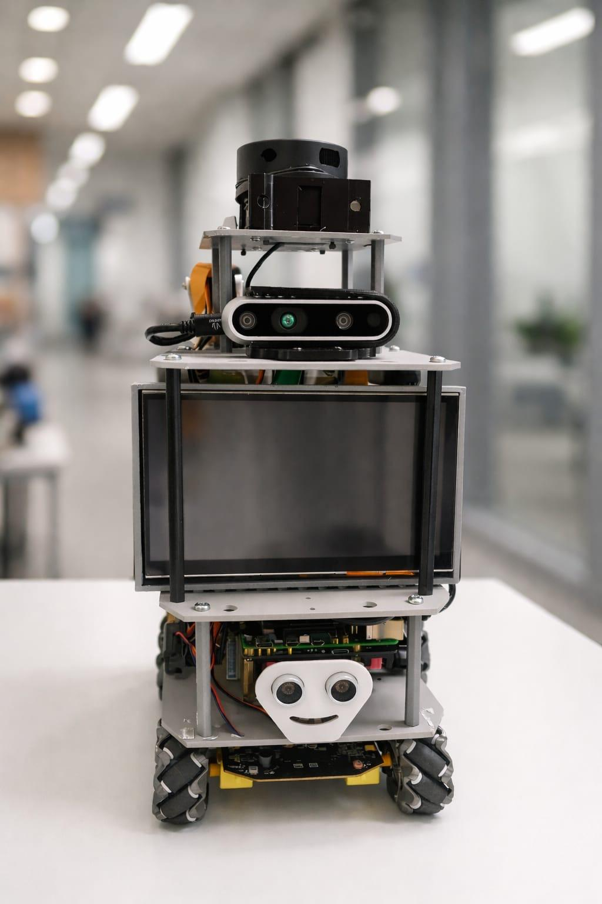

Who I am
I am Asikul Haque Rafsan, a developer building projects around robotics, mobile applications, embedded systems, and AI. I enjoy turning hardware and software into useful real-world systems.
Robotics • IoT • Mobile Apps • AI
I am a developer focused on robotics, mobile interfaces, embedded systems, and AI-powered software. My main work is Robot SAVO — a smart service robot with navigation, perception, voice interaction, and a mobile control interface.

About Me
I am Asikul Haque Rafsan, a developer building projects around robotics, mobile applications, embedded systems, and AI. I enjoy turning hardware and software into useful real-world systems.
My work includes Android apps, Python tools, ROS 2 robotics modules, AI-assisted systems, and web projects. I like projects where code controls something real.
I want my portfolio to show more than simple assignments. It should show my identity as a robotics and software developer who can design, test, and present complete systems.
Technical Stack
Flagship Project
Robot SAVO is the project that makes this portfolio personal. It combines robotics, mobile app control, navigation, mapping, sensor safety, and AI-based interaction into one complete engineering system.
robot_savo_status.log
system: Robot SAVO
mode: campus navigation
interface: mobile app + voice
stack: ROS 2, sensors, Android, AI
goal: summon robot, follow map, guide usersAndroid interface for robot dashboard, map, navigation, and voice command features.
Robot can be designed to move to selected locations using map-based navigation.
Depth camera, ToF, ultrasonic, and LiDAR-based perception can support safer indoor movement.
Voice and intent-based commands make the robot more natural for real users.
Interactive Preview
Explore the Robot SAVO demo model directly in the browser. Visitors can rotate, zoom, and inspect the 3D asset, then open the real robot video preview from the same showcase.
Demo 3D asset included for portfolio preview. Replace it later with the final Robot SAVO GLB model when ready.
Selected Work
Android app built with Kotlin and Jetpack Compose for Robot SAVO dashboard, map, navigation, and voice features.
AprilTag detection module for Robot SAVO, useful for robotics perception, marker detection, and lab testing.
Python-based project focused on AI-supported job searching and career assistance workflows.
Web development coursework and browser-based programming practice using HTML, CSS, and JavaScript.
Simple product banner app using Kotlin and Jetpack Compose, focused on clean UI layout practice.
Future portfolio cards can include ROS 2 navigation, AI server, STT/TTS pipeline, and safety system modules.
Roadmap
Show Robot SAVO, mobile app work, GitHub projects, and technical skills clearly.
Write short explanations for each project: problem, solution, tech stack, and screenshots.
Deploy with GitHub Pages, Vercel, or Netlify and link it from GitHub and LinkedIn.